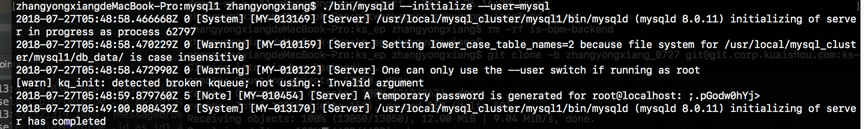
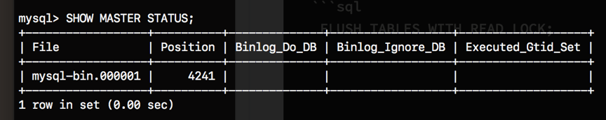
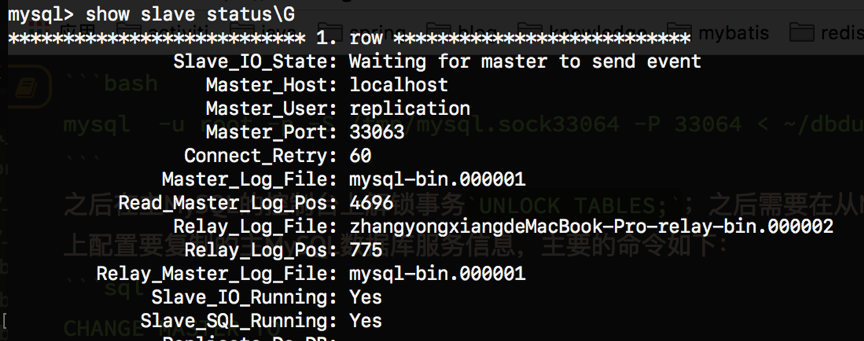

MySQL集群配置方法
主要记录了在本地机器配置MySQL集群方法，主要参考了MySQL的官方指导文档。
MySQL的复制技术概述
MySQL的主从复制主要是为了备份数据库，复制的主要目的有以下几点：
- 提高服务器的可伸缩性，主要是为了提升架构的性能；
- 容灾备份
- 数据分析
- 远距离数据同步
MySQL本身提供了2种方法用于复制数据：
- 基于日志文件，主要是根据文件名与日志文件中的位置进行复制
- 基于全局事务ID，在slave上同步全局事务
上面的2种方式都是异步的复制方式，MySQL NDB Cluster支持同步的复制方式，MySQL最新的版本支持目前已经支持半同步的复制方式，半同步的原理是在主MySQL上进行的事务操作保证在至少一个slave服务器上感知到这个事务后才会完成；MySQL也支持延迟复制。
复制具体执行的方式有2种：
- SBR，基于SQL语句；
- RBR，基于文件内容行
- MBR，混合了上述的2种方法
MySQL复制技术配置
这部分记录了详细的配置，主要记录了几个部分：
- MySQL本地集群的搭建方法
- 基于日志文件的复制配置
- 基于全局事务ID(GPID)的复制配置
- MySQL多源复制
- 线上更改复制模式
- 复制管理任务
MySQL本地集群的搭建方法
因为没有多余的机器用于搭建集群，我只能想办法在一台机器上通过改变端口的方式搭建集群，经过查看官方文档，我基本确定可以使用编译源代码指定生成应用程序的参数的方式更改MySQL安装的目录、端口等；这种方式经过我的实践后，是可以顺利的搭建集群的；后来，请教了技术大牛，才知道可以使用MySQL的mysqld_multi命令开启多个MySQL服务，并且可以指定数据目录与启动端口等；这2种方式都可以实现在本地搭建一个MySQL的集群，搭建好后可以进行各种MySQL的集群测试，我在这一部分把2种我的搭建的过程记录下来。编译MySQL源代码方式创建多个MySQL服务器
这部分主要参考了官方文档的内容，主要的操作步骤也是根据官方文档的步骤来操作；从官方文档的介绍来说，使用源代码编译MySQL的优势有定义应用参数、编译优化、指定安装位置等；编译MySQL源代码的需要系统里面先安装cmake、c++编译器、boost库等。编译安装的主要步骤如下：
- 下载源代码；
- 指定程序参数并编译安装；
- 安装后处理。
下面介绍主要的处理步骤。
下载源代码
mysql源代码的下载地址是https://cdn.mysql.com//Downloads/MySQL-8.0/mysql-boost-8.0.11.tar.gz；我选择的是带boost的版本，如果本地已经有boost库，可以选择不带boost的版本；下载下来解压到一个文件夹，接下来，创建安装位置文件夹/usr/local/mysql_cluster/mysql1，创建MySQL配置选项文件放置的文件夹，在传统的安装方法中，代表的是my.cnf文件。
make编译安装
使用的命令是1
cmake -DCMAKE_INSTALL_PREFIX=/usr/local/mysql_cluster/mysql1 -DSYSCONFDIR=/usr/local/mysql_cluster/etc1 -DMYSQL_UNIX_ADDR=/tmp/mysql.sock33060 -DDEFAULT_CHARSET=utf8 -DDEFAULT_COLLATION=utf8_general_ci -DWITH_INNOBASE_STORAGE_ENGINE=1 -DWITH_ARCHIVE_STORAGE_ENGINE=1 -DWITH_BLACKHOLE_STORAGE_ENGINE=1 -DWITH_PARTITION_STORAGE_ENGINE=1 -DENABLED_LOCAL_INFILE=1 -DMYSQL_USER=_mysql -DMYSQL_TCP_PORT=33060 -DMYSQL_DATADIR=/usr/local/mysql_cluster/mysql1/db_data -DDOWNLOAD_BOOST=1 -DWITH_BOOST=/Users/zhangyongxiang/Downloads/mysql-8.0.11/boost
主要需要注意的参数是CMAKE_INSTALL_PREFIX代表了安装的基本位置、MYSQL_UNIX_ADDR表示与MySQL服务器通信用的sock文件、MYSQL_TCP_PORT表示MySQL应用占用的端口，这里我指定为33060、MYSQL_DATADIR表示数据文件存储的位置，MYSQL_DATADIR表示boost库所在的位置、MYSQL_USER指定运行MySQL的用户、SYSCONFDIR代表my.cnf文件所在的位置；cmake安装还支持更多的自定义参数配置，可以查看官方文档。
在运行完上述命令后，为安装文件配置目录权限1
chown -R zhangyongxiang:_mysql /usr/local/mysql_cluster/mysql1
之后运行命令1
make && make install
安装，之后等待安装完成。之后可以通过指定不同的安装位置、端口等参数安装多个MySQL应用。
安装后的mysql初始化操作
安装完MySQl后，需要进行MySQL服务器的初始化、启动服务、初始化用户等操作。详细的步骤如下：
- MySQL应用初始化操作，主要的命令是
1
bin/mysqld --initialize --user=mysql
这个命令完成了初始化MySQL应用的DB库的操作。并且会生成一个root@localhost用户的初始密码，需要记住这个生成的密码，以便后面登陆root用户，如下图所示

开启安全连接，主要是启用SSL连接，主要的命令是
1
bin/mysql_ssl_rsa_setup
这个命令会自动生成一些有关于安全连接的文件。
- 启动mysql服务，有2个命令启动MySQL服务分别是
1
bin/mysqld_safe --user=mysql &
与
1
support-files/mysql.server start
之后，MySQL服务启动起来。
- 服务启动后需要修改root用户的密码，在上面的步骤中，MySQL在创建时已经生成了一个临时的密码，此时输入命令：
1
./bin/mysql -u root -P 33060 -S /tmp/mysql.sock33060 -p
如果是没有为root用户生成密码的情况，需要输入命令：
1
./bin/mysql -u root -P 33060 -S /tmp/mysql.sock33060 --skip-password
之后，进入到MySQL控制台，输入以下命令更改MySQL的root用户的密码：
1 | ALTER USER 'root'@'localhost' IDENTIFIED BY '163766'; |
mysqld_multi方式创建多个MySQL服务器
上面的建立方式步骤太过繁琐，需要编译MySQl等，这一部分记录下使用mysql_multi的方式创建多个MySQL服务，相比上面的方式，这种方式更加便捷。
mysqld_multi命令是用来在一个机器上管理多个数据库服务实例的工具；每个数据库服务实例都必须有自己的不同的于其他数据库服务实例的端口、socket 文件、pid文件、数据存储目录；mysqld_multi会寻找my.cnf文件内的[mysqldN] 模块；N可以是任何的正数；这个数是用来区分每个数据库服务实例的，我把它称为实例ID；通过在命令行上指定这个ID，mysqld_multi可以选择启动或者停止对应ID的数据库服务实例；mysqld_multi命令的格式如下：
mysqld_multi [options] {start|stop|reload|report} [GNR[,GNR] …],
下面是我在我的/etc/my.cnf文件内配置的其中一个数据库服务实例，如果要配置成多个，只需要修改一些必要的参数就可以了。
1 | [mysqld33060] |
这种安装方式碰到了一个问题就是在生成多个MySQL数据库服务实例后，也会在控制台打印出初始化root用户的密码，此时还需要更改下root用户密码；如果没有密码生成，也可以在第一次启动时，在配置文件中加入skip-grant-table选项，然后进入到mysql的控制台修改root用户的密码。
基于日志文件的复制方法
方法简述
这种方法是基于MySQL的二进制日志文件的，复制操作是异步的，并且，每个从服务器都可以连接主服务器进行复制，互不干扰，因为每个从服务器都保存有自己的日志文件的复制内容指针。
操作步骤
操作的步骤根据MySQL的情况会有不同，主要的步骤分为下面的几个步骤。
主MySQL服务器的配置
主要是在my.cnf文件内配置MySQL的server-id与日志文件名称，这2个属性是必须谁设置的，而且每个MySQL 数据库服务的server-id必须不能相同。
代码如下：1
2
3
4
5
6
7
8
9[mysqld33063]
basedir=/usr/local/mysql
datadir=/usr/local/mysql/data33063
language=/usr/local/mysql/share/english
port=33063
user=mysql
socket=/tmp/mysql.sock33063
server-id=4
log-bin=mysql-bin
设置完成后，必须重新启动这个数据库服务实例；接下来创建主MySQL数据库服务器的专门用于复制的用户，主要的考虑是普通用户可能会写到代码中，造成复制权限的泄漏。创建MySQL用户并付给复制权限；1
2CREATE USER 'replication'@'%' IDENTIFIED BY '163766';
GRANT REPLICATION SLAVE ON *.* TO 'replication'@'%';
之后需要获得主MySQL的当前的日志文件的指针，但是必须首先运行以下命令来阻止InnoDB存储引擎下的commit的提交操作，防止commit丢失：1
FLUSH TABLES WITH READ LOCK;
接下来运行命令1
SHOW MASTER STATUS;
运行之后的效果如下图所示；

需要记住显示结果中的FIle与Position，后面配置从服务器的时候要用到。
现有数据导出
加入主MySQL数据库在之前已经有数据，需要手动把这些数据导出到从服务器的数据目录内；有2种方式，第一种是使用命令1
mysqldump -u root -p -S /tmp/mysql.sock33063 -P 33063 -A --master-data > ~/dbdump.db
然后在从MySQL服务器上使用mysql的命令导入生成的dump文件。
第二种是直接将主MySQL服务的数据目录打包，传输到从服务器后解压到从服务器的数据目录，需要把auto.conf文件删除，这个文件会生成一些关于数据库服务实例的唯一性UUID等信息，所以复制后需要删除该文件。
设置从MySQL数据服务实例
首先，也要像设置主MySQL数据库服务时，在配置文件内给出server-id等；按照上一个步骤，需要把dump文件导入到新的从MySQL数据库服务中，导入的命令如下:1
mysql -u root -p -S /tmp/mysql.sock33064 -P 33064 < ~/dbdump.db
之后在主MySQL的控制台上解锁事务UNLOCK TABLES;；之后需要在从MySQL数据库服务上配置要复制的主MySQL数据库服务信息，主要的命令如下：1
CHANGE MASTER TO MASTER_HOST='localhost',MASTER_USER='replication',MASTER_PORT=33063,MASTER_PASSWORD='163766',MASTER_LOG_FILE='mysql-bin.000001',MASTER_LOG_POS=4241;
接下来输入1
START SLAVE;
从MySQL数据库服务此时就会开启，如果想要查看复制的状态，输入命令1
show slave status\G
效果如下图所示

需要注意图中的Slave_IO_Running与Slave_SQL_Running都必须是Yes，代表主从复制就成功了。
基于GPID的复制方法
GPIDs(Global Transaction Identifiers)我把它翻译为全局事务ID；在主服务器应用的事务会生成一个带有机器信息的事物ID，然后从服务器就可以重新提交这个事务，完成与主服务器的同步功能；所以不需要知道日志文件的位置，因为是通过事务完成的同步，所以只适用于MySQL事务相关的存储引擎，比如InnoDB；GPID在主服务器生成后会写入到日志文件中，如果事务没能保存到日志文件中，是不会分配GPID的；如果当前活动日志中没有出现主服务器的GPID，它会保存在mysql.gtid_executed表中，比如安装数据库的时候指定不需要日志；
MySQL多源复制
线上更改复制模式
复制管理任务
MySQL集群的高可用性
MySQL的双主架构
keepalived保证MySQL的高可用性
MMM高可用
结语
- 本文链接：http://blog.bestzyx.com/2018/11/20/ck20193gg0004hklpv0k4iqyz/
- 版权声明：The author owns the copyright, please indicate the source reproduced.